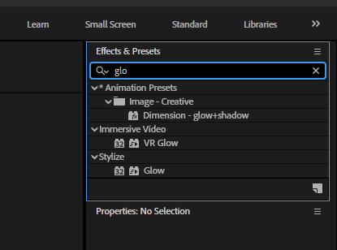
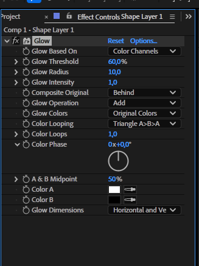
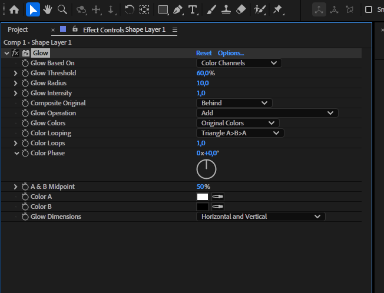

Эффекты и плагины в After Effects
Один и тот же знак может выглядеть как неоновая вывеска, рельеф на стекле или облако частиц. За этими результатами стоят разные операции. В этой лекции разберём, какие данные нужны эффекту на входе, что он меняет и как выбрать инструмент под сцену.
| Задача | Средства After Effects | Что сравнить из отдельных плагинов |
|---|---|---|
| Неон | Glow, Trim Paths | Saber, Deep Glow |
| Рябь и преломление | Displacement Map, Wave Warp | Sapphire для готовых стилизаций |
| След и замедление | Echo, Timewarp | RSMB, Twixtor |
| Искры и рассыпание | CC Particle World, Shatter | Trapcode Particular |
| Замена экрана | Mocha AE, Corner Pin | Mocha Pro, Supercomp |
| Рельеф и объём | CC Glass, импорт 3D | Element 3D |
| Переходы | Linear Wipe, Directional Blur | Motion Bro |
Порядок эффектов и границы слоя
Откройте Effects & Presets и найдите эффект по названию. Effect Controls показывает цепочку обработки слоя. Перетащите эффект выше или ниже и сравните результат. Например, Roughen Edges перед Glow даёт свечение по неровному краю, а при обратном порядке деформируется уже ореол. Переключатель fx у эффекта быстро возвращает исходник для сравнения.


На корректирующем слое эффект обрабатывает композицию слоёв под ним. На обычном слое входом служит изображение самого слоя с учётом операций, которые выполнены раньше. Если нужно обработать группу как единое изображение, соберите её в прекомпозицию. Оставьте запас по краям, если свечение, размытие или смещение упираются в границу.
Эффект меняет изображение или генерирует его на слое. Пресет сохраняет сочетание настроек и может включать ключи. Расширение или скрипт может собирать слои, создавать контроллеры или переносить графику. Mocha AE и эффекты с префиксом CC поставляются вместе с After Effects, хотя имеют сторонних разработчиков.
Свечение, блики и световые линии
Glow выделяет светлые области или работает по альфа-каналу. Threshold меняет порог, Radius задаёт ширину ореола, Intensity регулирует его силу. Для вывески попробуйте сначала короткий яркий ореол у контура, затем широкий слабый слой света. Сравните на тёмном и светлом фоне. Если буквы сливаются, уменьшите радиус или верните чёткое ядро поверх.

CC Light Sweep подходит для блика, который проходит по букве или предмету. Анимируйте Center и согласуйте направление с формой. Для контура, который рисуется по пути, начните с Trim Paths на шейпе и добавьте Glow. Saber от Video Copilot удобен для световой линии с отдельным контролем ядра и ореола. Deep Glow стоит сравнить со штатным Glow на одном кадре, если важны мягкий спад и яркое ядро. Optical Flares пригодится для бликов, связанных с источником света или объективом.
Искажение, волны и управляемый глитч
Turbulent Displace создаёт деформацию с помощью шума. Amount отвечает за силу, Size за масштаб неровностей, Evolution меняет рисунок во времени. Для бумажной кромки попробуйте малый Size и слабое смещение. Для теплового марева сделайте области крупнее и ограничьте действие маской.
Displacement Map берёт значения из другого слоя. При карте яркости средний серый примерно нейтрален, светлые и тёмные участки сдвигают пиксели в разные стороны. Для ряби соберите карту из Fractal Noise или градиентных полос и настройте горизонтальное и вертикальное смещение отдельно. Если карта строится эффектами, укажите источник с эффектами там, где это доступно, либо подайте прекомпозицию готовой карты.
Wave Warp подходит для периодической волны, Mesh Warp и Bezier Warp помогают вручную менять крупную форму. Для короткого цифрового сбоя можно сочетать полосатую карту смещения, раздельный сдвиг цветовых каналов и несколько кадров Posterize Time. Sapphire и Universe дают готовые варианты стилизации и переходов. Оцените, можно ли изменить длительность сбоя и оставить текст читаемым.
Текстура, контур и цвет
Fractal Noise и Turbulent Noise подходят для дымки, шероховатости и карт движения. Сначала настройте масштаб и контраст, затем решите, будет ли текстура двигаться вместе с объектом или с кадром. Roughen Edges меняет границу альфа-канала. Add Grain и Match Grain пригодятся, если элементы должны выглядеть частью одной съёмки.
Curves управляет тональным диапазоном, Lumetri помогает согласовать кадры и выстроить общий цвет, Tint и Tritone быстро ограничивают палитру. Find Edges, Threshold и Mosaic полезны для графической стилизации. Поставьте коррекцию до Threshold, если хотите управлять тем, какие области превращаются в пятна.
Magic Bullet Looks даёт готовую среду для сборки цветового образа. Boris FX Sapphire и Continuum полезно изучать по отдельным эффектам, которые нужны проекту. Сравнивайте обработку на нескольких планах: текстура или цвет, удачные на общем кадре, могут стать слишком заметными на крупном.
Как собрать бумажную текстуру для движущегося титра
- На отдельном слое сделайте широкие пятна через Fractal Noise. Соберите на втором слое мелкие детали.
- Соберите текстуру в прекомпозицию. Используйте альфа-матт из текста, если она должна быть видна только внутри букв.
- Привяжите текстуру к движению титра или оставьте её на месте. Сравните, где бумага ощущается свойством букв, а где они как будто вырезаны из неподвижного листа.
- Проверьте мелкий текст после экспорта. Если зерно заполняет просветы и портит читаемость, уменьшите контраст текстуры.
Скорость, размытие и след
Time Remapping выбирает, какой момент исходника показывать сейчас. Для ускорения сблизьте ключи исходного времени, для остановки удержите одно значение. Posterize Time меняет частоту обновления изображения в месте применения. Проверьте, где нужно сохранить ступенчатую пластику, а где движение камеры должно оставаться плавным.
Motion Blur слоя подходит для движения его трансформаций. Когда движение уже находится внутри видео или создаётся эффектами, попробуйте Pixel Motion Blur или CC Force Motion Blur в подходящей цепочке. Echo смешивает несколько отсчётов времени. Для следа за объектом держите объект на прозрачном слое и настройте затухание, чтобы след не перекрывал текущую позу.
Timewarp и Twixtor помогают замедлять снятое движение с синтезом промежуточных кадров. ReelSmart Motion Blur добавляет размытие на основе оценённого движения. Смотрите на пальцы, волосы, пересечения объектов и края. На резких склейках и перекрытиях проверяйте обработку по планам.
Twixtor · ReelSmart Motion Blur
Частицы, рассыпание и повторение
Для искр начните с CC Particle World. Выберите область рождения, направление, скорость, гравитацию и срок жизни. Малое число частиц с ясной траекторией помогает увидеть, что делает каждый параметр. CC Particle Systems II тоже подходит для быстрых проб. CC Pixel Polly и Shatter полезны для разрушения изображения на фрагменты.
Для повторяющихся объектов с предсказуемыми интервалами удобен Repeater у шейпа. Если нужен поток со случайной вариацией, меняющейся силой, собственными спрайтами и более сложными эмиттерами, посмотрите Trapcode Particular. Для соединения точек и линий можно рассмотреть Plexus. Выбирайте по устройству сцены: нужно ли повторять форму, выпускать частицы или показывать связи между точками.
Как выбрать систему частиц
Для атмосферной пыли нужны редкие частицы с долгой жизнью, небольшим разбросом скорости и мягким входом в кадр. Для взрыва важны короткое рождение, разные скорости и заметное затухание. Для рассыпания букв важно, чтобы частицы появлялись в конкретных местах исходного изображения. Параметры, которые стоит проверить первыми, меняются вместе с задачей.
Сначала соберите движение на простых точках. После этого добавьте вариации размера, цвета и прозрачности. Размытые дальние точки помогут дать глубину, но равномерный крупный слой свечения может скрыть разницу между планами. Для чистого композитинга проверьте, можно ли вывести частицы с альфа-каналом отдельно от фона.
Маски, кеинг и интеграция графики
Для зелёного фона начните с Keylight. Сначала оцените маску в режиме Screen Matte. Сохраните полупрозрачные края и уберите остаточный оттенок фона. Roto Brush помогает выделять человека без однотонного фона. Проверяйте перекрытия, края волос и кадры, где объект выходит из поля зрения. Simple Choker и Refine Hard Matte полезны для отдельных задач с краем.
Для вставки на экран используйте Mocha AE. Обведите область с общей плоскостью движения, проверьте сеткой, затем передайте данные в Corner Pin. Спрячьте вставку за рукой с помощью маски. Для согласования добавьте отражения, расфокусировку, зерно и подстройте контраст. Mocha Pro имеет дополнительные модули, а Maxon Supercomp полезен для согласования слоёв, светового обтекания и других задач композитинга.
Что делать, если вставка выглядит наклейкой
Проверьте четыре причины. При ошибке перспективы границы графики расходятся с углами поверхности. При ошибке маски графика перекрывает предметы, которые в кадре находятся ближе. При ошибке света вставка слишком чистая или контрастная для окружения. При ошибке резкости и зерна она отличается от соседних деталей на той же глубине. Исправляйте в таком порядке, чтобы коррекция цвета не скрывала ошибку трекинга.
Псевдообъём, переходы и расширения
CC Glass использует карту рельефа, чтобы сформировать блики и тени на плоском изображении. Bevel Alpha добавляет ощущение грани по альфа-каналу. Для настоящего объёма сравните импорт 3D-модели в поддерживаемом режиме After Effects, рендер из Blender и Element 3D от Video Copilot. В каждом случае проверьте, какие материалы, камеры и свет можно менять внутри проекта.
Linear Wipe и Gradient Wipe дают управляемое раскрытие. Для перехода по движению можно связать Position, Directional Blur и Motion Tile с запасом по краям. Motion Bro помогает применять пакеты пресетов. Откройте один переход послойно и выясните, какие свойства меняются, сколько кадров требуется на вход и выход и где возникает склейка.
Overlord помогает переносить поддерживаемую векторную графику в AE. Duik и Rubberhose относятся к инструментам риггинга. При выборе расширения проверьте, нужно ли оно для открытия и рендера готового проекта. Если панель создала обычные ключи, результат может работать без неё. Если композиция использует сторонний эффект, команде понадобится совместимая версия или заранее просчитанный слой.
Примеры сочетания эффектов
| Что хотим увидеть | Как собрать | Что сравнить |
|---|---|---|
| Стекло над типографикой | Прекомпозиция с узором или фото → копия для преломления → Displacement Map по карте с мягкими границами → альфа-матт по форме стекла. Сверху добавьте тонкий блик на отдельном слое. | Временно уберите блик и посмотрите, читается ли стекло по смещению рисунка. Включите блик и проверьте, сохранился ли контраст букв. |
| Световой след за знаком | Знак движется в прекомпозиции с достаточным запасом по краям → Echo создаёт след → Glow смягчает его. Исходный знак оставьте поверх на отдельном слое. | При 25 fps шаг Echo Time в −0,04 с соответствует одному кадру. Измените число отсчётов, затем затухание, чтобы увидеть, какой параметр задаёт длину следа, а какой его плотность. |
| Графика внутри снятого кадра | Mocha AE отслеживает плоскость → Corner Pin ставит графику в перспективу → маска возвращает перекрывающий объект → Curves, размытие и зерно согласуют изображение. | Сначала проверьте точность крепления без стилизации. Затем включите финальную обработку и посмотрите кадр в движении, особенно в местах, где предмет закрывает экран. |
Порядок проверки. Сначала добейтесь читаемого результата одним эффектом. Затем добавляйте этапы по одному, называйте слои по функции, например «карта смещения» или «маска руки», и сохраняйте версию до замены эффекта плагином. Так проще вернуть проект в рабочее состояние и объяснить, зачем нужен каждый слой.
Как соединять эффекты под задачу
Разложите результат по слоям. Один слой задаёт форму или маску, другой меняет движение, третий отвечает за оптику. Например, буквы можно оставить резкими, а эффект смещения применить к копии за ними. Если потом понадобится уменьшить свечение, достаточно изменить один слой. Ниже несколько цепочек, которые можно собрать из коротких проб и проверить по отдельности.
Портрет рассыпается и собирается в знак
Сначала отделите человека через Roto Brush или Keylight, если есть однотонный фон. Сделайте дубликат прекомпозиции. На одном слое оставьте исходный силуэт, а со второго снимите альфу для рождения частиц. В Trapcode Particular используйте эмиттер типа Layer с подготовленным источником. Синхронизируйте исчезновение исходного слоя с появлением частиц на его краю. Для финальной сборки можно снять отдельный проход рассыпания знака и развернуть этот просчитанный клип по времени. На стыке согласуйте направление потока и плотность.
Без Particular попробуйте CC Pixel Polly на прекомпозиции с альфой. Он разрежет исходник на осколки, поэтому подойдёт для более графичного варианта. Сначала проверьте силуэт и момент распада. Затем добавьте Glow только к ярким частицам, чтобы лицо или знак оставались читаемыми до распада.
Два изображения превращаются друг в друга
Для простых векторных форм начните с ключей Path. Сопоставьте вершины и проверьте направление контуров. Для фотографий и сложных силуэтов можно попробовать RE:Flex. Отметьте соответствующие ориентиры, например углы корпуса, центр логотипа и край ручки. Подгоните кадры по масштабу, затем задайте промежуточную форму и переход прозрачности. Проверьте середину морфа до добавления размытия. Если в середине видно два набора деталей, уточните соответствия или поменяйте момент смены прозрачности. Примеры и уроки RE:Flex.
Эффекты в продуктовой графике
Возьмите карточку сервиса с одним показателем. Сначала карточка появляется, затем счётчик доходит до своего значения, после чего короткий отблеск отмечает итог. Так движение ведёт взгляд от формы к данным. Текст и цифры держите поверх обработанного фона, чтобы они оставались резкими.
Соберите движение карточки через Position и Scale. Счётчик можно связать со Slider Control, а подсветку пустить по маске формы через CC Light Sweep. Для мягкого цветового пятна за карточкой используйте 4-Color Gradient и размытие. Сначала проверьте последовательность без подсветки, затем добавьте её и сравните, куда зритель смотрит в момент фиксации значения.
Главы урока: первый приём · второй · третий · четвёртый · пятый.
Типографика проходит через цифровой сбой
На копии титра примените Displacement Map с горизонтальными полосами, затем разнесите каналы через Shift Channels на отдельных слоях. Чистую версию держите под обработкой и открывайте на ней основное время чтения. Posterize Time можно поставить внутри прекомпозиции сбоя, чтобы рывки затрагивали искажение, а движение чистого титра осталось плавным. Для сравнения попробуйте Sapphire S_DigitalGlitch: настройте длительность всплеска, затем проверьте, совпадает ли его ритм с монтажом. Указатель эффектов Sapphire.
Графика на экране в шумной съёмке
Если шум мешает видеть детали, попробуйте Remove Grain или Neat Video на тестовом дубликате. Сравните, по какой версии Mocha AE устойчивее отслеживает плоскость. Перенесите Corner Pin на вставку, верните перекрытия маской, подгоните резкость и контраст. Когда вставка уже стоит на месте, добавьте Match Grain по соседнему участку исходного кадра. Не дублируйте зерно поверх всей съёмки: оно нужно прежде всего там, где введён новый элемент. Сравнение шумоподавления в After Effects.
Переход выглядит как часть движения
Возьмите два плана, где движение идёт в одном направлении. На выходе первого ускорьте Position, а на входе второго затормозите. Между ними соберите короткий участок с Directional Blur и запасом изображения через Motion Tile. На кадре склейки линии и крупные пятна должны поддерживать одно направление. Если используете пресет Motion Bro, подстройте его длительность к движению планов. В снятом фрагменте проверьте ReelSmart Motion Blur отдельно от синтетического размытия и оставьте тот проход, который лучше ведёт края. Примеры ReelSmart Motion Blur.
Платные плагины и выразительные приёмы
Блоб-трекинг и графика поверх съёмки
Снимите танцора в яркой куртке на спокойном фоне. Tracery 2 может находить области по цвету или движению и рисовать рамки, точки, соединения и подписи. Рамка обводит область, которую нашёл алгоритм. Если два пятна сливаются или человек выходит из кадра, проверьте, как меняются размеры и положение рамок. Для точки, которая должна держаться на одной детали одежды, отдельно используйте трекинг точки или плоскости.
Соберите цепочку: копия кадра для детекции → ограничение зоны маской и тональная коррекция → Tracery → графика поверх чистой съёмки. Начните с одного маркера, затем добавьте соединения и короткие подписи. Светящийся акцент можно вынести на отдельный слой с Glow. На шумном фоне проверьте, нет ли скачков. Они могут быть частью стилизации, если появляются в выбранные моменты.
Глитч как переход между сценами
Datamosh 2 пригодится, когда движение второго плана должно словно протянуть пиксели первого. Выберите два плана с заметным движением и разборчивыми силуэтами. Соберите чистую склейку, сделайте её копию для обработки и оставьте эффект в коротком окне вокруг склейки. Затем верните чистый второй план. Для титра поверх такого перехода оставьте отдельный слой, чтобы успеть его прочитать.
Для более графичного варианта соберите полосы через Fractal Noise, используйте их как карту смещения и добавьте короткий сдвиг RGB. Эта цепочка даёт управляемый сбой внутри одного кадра. Datamosh полезен, когда след предыдущего плана должен пережить склейку.
Живые градиенты
Соберите цветовые пятна через 4-Color Gradient и анимируйте положение двух точек, чтобы палитра двигалась с разной скоростью. Затем примените Turbulent Displace с крупным размером шума. Для плавных переходов попробуйте 16 или 32 bpc, если цепочка их поддерживает. Тонкая текстура в самом конце помогает визуально смягчить полосы, но её плотность стоит оценить после экспорта.
OpalRamp пригодится для свободно расставленных цветовых точек и градиента внутри знака. Для заставки оставьте спокойное поле под текстом и поместите яркий акцент у направления движения. Можно собрать градиент внутри букв через альфа-матт, дать один короткий блик через CC Light Sweep и добавить слабое зерно поверх. Проверьте пару кадров, где светлое пятно подходит близко к тексту.
OpalRamp · примеры и демонстрация
Из видео в живую точечную графику
Rowbyte Stipple превращает тон изображения в подвижный рисунок из точек. Возьмите короткий портрет, поднимите контраст через Curves и пустите его в Stipple. Ограничьте точечный слой силуэтом или используйте им весь кадр. Сверху можно вернуть чистую типографику, а под рисунок положить цветовой градиент. Так плотность точек описывает форму, а градиент управляет цветом композиции.
Для сравнения попробуйте CC Ball Action на копии. Он раскладывает изображение по регулярной сетке, из которой легко собрать пиксельный экран. В Stipple интереснее следить за тем, как точки перестраиваются по тону и движению. Проверьте оба варианта в маленьком размере: если лицо исчезает, упростите фон или усилите различие светлых и тёмных областей.
Сочетания эффектов для съёмки и графики
Собирайте композицию в порядке «подготовка источника → движение или деформация → оптика и цвет». Для проходов, которые должны меняться независимо, пригодятся отдельные ветки. В переходе со шлейфом чистый объект и вытянутые пиксели можно держать на разных слоях. Если поменять порядок и размыть исходник перед Pixel Stretch, шлейф унаследует размытую палитру. Если размыть его после, исходные цвета сохранятся в полосах, а смягчатся их границы.
Пиксельный шлейф из цветов кадра
Вырежьте объект маской и оставьте его чистую копию сверху. Под ней обработайте дубликат через Pixel Stretch, ограничьте область растяжения и анимируйте интенсивность. После добавьте Directional Blur вдоль полос и слегка выровняйте цвет через Curves. На финальном кадре перехода согласуйте цвет полос с цветом следующего плана. Для грубой пробы без плагина вырежьте узкую полосу изображения и растяните её через Scale без связи осей. Pixel Stretch.
Кадр с эстетикой старой видеокамеры
Вначале выровняйте контраст и цвет съёмки. Затем примените Interlaced Glitch к собранной сцене. Короткий всплеск сбоя можно добавить отдельным проходом через Displacement Map на склейке. Если нужен читаемый современный титр поверх «архивной» картинки, положите его выше обработки. Если титр задуман как часть записи, обработайте его вместе с кадром и отдельно проверьте читаемость. Interlaced Glitch.
Как убрать объект из снятого кадра
Для простой очистки сделайте маску Subtract и проследите, чтобы она закрывала объект на всём фрагменте. Запустите Content-Aware Fill. Если текстура в заполнении плавает, попробуйте опорный кадр с ретушью или отдельную заплатку. На плоской поверхности привяжите заплатку через Mocha AE и Corner Pin, уточните края маской и подгоните цвет с Curves. Match Grain добавьте только к заплатке после согласования резкости. Урок Adobe по удалению объектов.
Стекло, градиенты и свет в работах SonduckFilm
В первом уроке можно сравнить три приёма: стекло с 0:14, текучий градиент с 1:48 и свет с 3:18. На 5:16 автор показывает, как стекло выглядит на белом фоне.
Для своей карточки соедините три слоя: подвижный градиент внизу, преломление фона внутри маски и узкий блик у края. Начните с 4-Color Gradient и крупной деформации через Turbulent Displace. Затем примените Displacement Map к копии фона и ограничьте её альфа-маттом карточки. Блик и текст положите выше. Проверьте на светлом и тёмном фоне, где стекло сохраняет границу и где тексту не хватает контраста.
Во втором уроке с 3:46 начинается работа со светом, с 4:37 с текстурой, с 5:52 с камерой, а с 7:28 с тенями.
На плоской графике проверьте тот же принцип. Поднимите знак над подложкой и положите тень на отдельный слой. С увеличением расстояния попробуйте сделать тень мягче и слабее. Настройте её так, чтобы момент отрыва читался даже в простой версии с однотонной заливкой. Затем добавьте градиентный блик и сравните обе версии.
Морфинг знака в предмет
Два варианта морфинга начинаются на 0:14 и 3:11. Для своей заставки выберите формы с общей деталью: например, круг в логотипе становится объективом. Сохраните положение этой детали на переходе, а остальные контуры перестройте вокруг неё. На сложном силуэте сначала проверьте промежуточную позу, затем добавьте размытие движения.
Анимированный коллаж из нескольких кадров
На 1:09 автор вставляет и анимирует видео, на 3:57 переходит к титрам, на 5:26 собирает панели вместе. Такой коллаж подойдёт для продуктового ролика, где общий вид и деталь нужно показать одновременно. Ограничьте кадры шейпами через альфа-матт, двигайте видео внутри панелей и дайте главной панели появиться первой.
Newton 4 и физика столкновений
Newton 4 от Motion Boutique симулирует движение плоских тел в After Effects. Он рассчитывает падение, столкновения и отскоки, а результат можно перенести в композицию как ключи. Это удобно, когда буквы падают, толкают соседние формы или рассыпаются при ударе. Newton 4 и документация разработчика.
- Разнесите буквы по слоям. Добавьте под ними прямоугольник для пола.
- В Newton задайте буквам тип Dynamic, а полу Static. Запустите симуляцию. Упругость влияет на отскок, трение на скольжение после контакта.
- Экспортируйте движение в ключи. Если титр должен остаться читаемым, проверьте финальное положение букв или перейдите после столкновения к чистому титру.
Сочетайте симуляцию с эффектами по этапам. Newton задаёт траекторию, Motion Blur передаёт скорость падения, а короткий акцент на отдельном слое подчёркивает первый удар. Сначала проверьте контакты по кадрам. Затем включите смаз и звук и сравните, стало ли ощущение веса убедительнее.
Как проверить эффект в готовой сцене
Возьмите короткий фрагмент с логотипом. Соберите базовую версию, где читаются форма и движение. В первой вариации подчеркните проявление знаком светом, во второй покажите изменение материала через карту смещения, в третьей добавьте частицы, которые продолжают направление движения. Смотрите ролики в нормальной скорости и сравнивайте по одному изменению за раз.
Чтобы понять стоимость эффекта, проверьте один и тот же участок в полном разрешении и с тем же цветовым режимом. Оцените рендер, читаемость после сжатия, наличие прозрачности и совместимость проекта на другой машине. GPU-ускорение, поддержка Multi-Frame Rendering и глубин цвета зависят от эффекта. 32 bpc полезен для световых композиций, если выбранная цепочка его поддерживает. Для тяжёлого стабильного фрагмента сохраните исходник и сделайте промежуточный рендер.
Для проверки перед сдачей откройте экспорт. Посмотрите края изображения на сильном смещении, отдельные стоп-кадры после замедления и участки, где свечение пересекает текст. Если изменение трудно заметить, сформулируйте его назначение и сравните версии на одном экране.